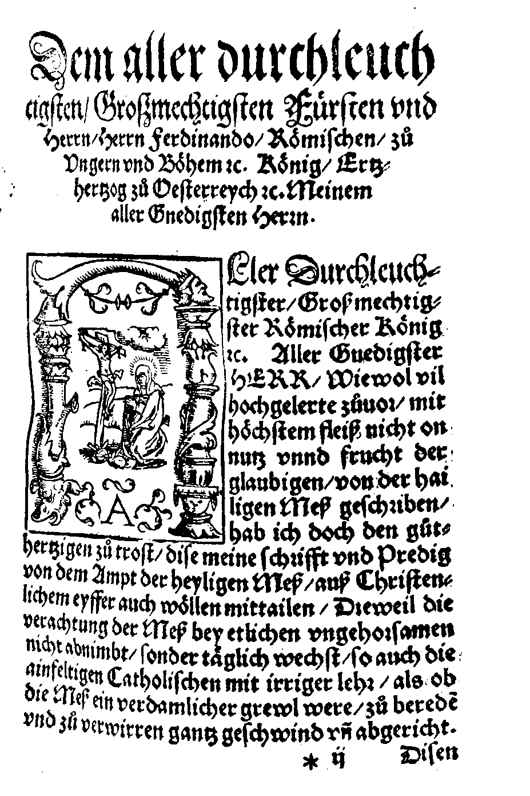
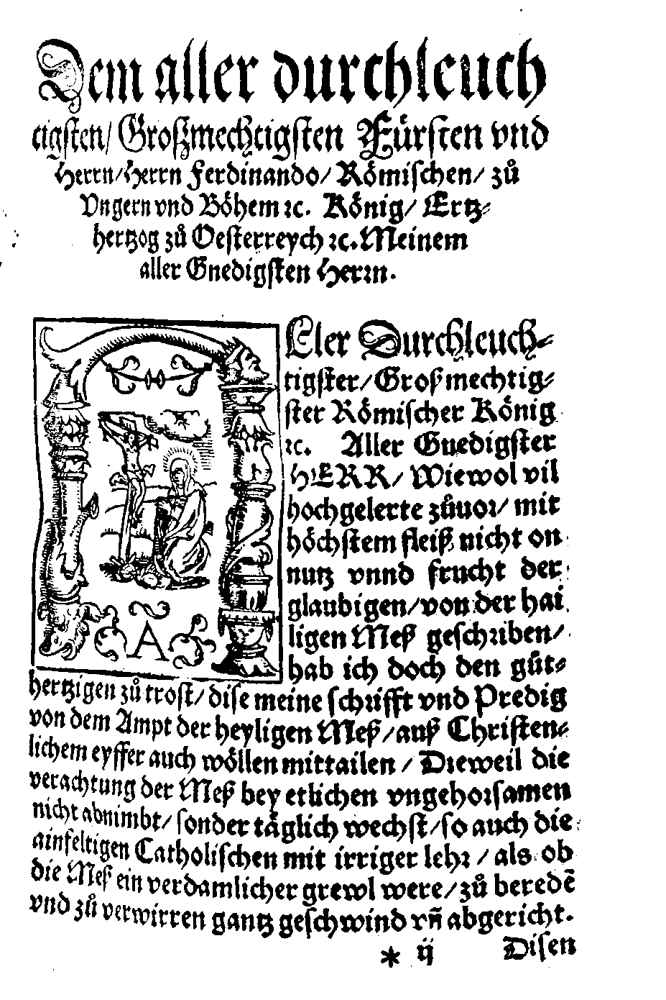

OCR-D im Februar 2019
Konstantin Baierer
Digital Humanities Network, 2019-02-06
OCR ?
Im engeren Sinne:
Maschinelle Erkennung einzelner Zeichen
Mit 99% Wahrscheinlichkeit der Unicode-Glyph 0x31
"Optical Character Recognition" #2
Automatisierter Workflow um auf Grundlage eingescannter Rasterbilddaten Layout und Inhalt eines gedruckten Dokuments möglichst wirklichkeitsgetreu mit Markup abzubilden
Nicht OCR
Binarisierung
 


Cropping / Deskewing / Dewarping


Layouterkennung

"Klassische" OCR

- Segmentieren bis auf Zeichenebene
- Regeln für Erkennung einzelner Zeichen
- Korrektur über Maschinelle Sprachverarbeitung
Deep Learning FTW
Deep Learning OCR
- Zeilenbasiert
- Quellenspezifisches Training
- Sprachmodell entbehrlich
Das OCR-D Projekt
OCR-D Koordinierungsprojekt
| |
|
| |
Phase 1: Bestandsaufname (2015-2017)
Erforschen des (Open Source) Ökosystems
rund um OCR und Dokumentanalyse
Desiderata und Aufgaben erarbeiten
Ausschreibung der Modulprojekte für DFG vorbereiten
Phase 2: Modulprojekte (2018-2019)
 |
 |
| |
Phase 3: Nachnutzbar machen (2018-2020)
Integration in Digitalisierungsworkflows wie Kitodo
OCR-D-entwickelte Software großflächig einsetzbar machen
Beraten der DFG bzgl. OCR in den "Praxisrichtlinien"
Aktuelle Entwicklungen
DATeCH 2019 #1 - OCR-D Generell
- Spezifikationen
- Software
- Modulprojekte
- Community
DATeCH 2019 #2 - Ground Truth
- Ground Truth = Trainingsdaten = Evaluationsdaten
- METS + PAGE XML + BagIt + Repositories
- Ontologie für extrinsische und intrinsische Eigenschaften
ICDAR 2019 - Multi-engine Training
- Einheitliches Training von mehreren Engines
- Spezifikationen für Austauschformate
- Einheitliche Evaluation
- Software-Prototyp
Kitodo Hackathon
- 20.02. @ SLUB, Dresden
- Integration OCR-Workflow in Kitodo
Entwicklerworkshop mit Modulprojekten
- 27./28.02. @ BBAW, Berlin
- Finalisieren der Spezifikationen
- 1.0 Release der OCR-D/core Software
- Beta-Versionen der Software der Modulprojekte
BID 2019
- Vortrag "Von der Vision zur Umsetzung: Der aktuelle Entwicklungsstand von OCR-D",
18.03. 09:00 - Öffentliche Arbeitssitzung "OCR-D in der Praxis: Ein gemeinsamer Ausblick mit Dienstleistern und Anwendern",
18.03. 16:00
DHd 2019
- Workshop "Vom gedruckten Werk zu elektronischem Volltext als Forschungsgrundlage"
25.03. 14:00